WatchFlow Trial 005：91点から96点へ、coverage thresholdとCI証跡の入口を入れる
2026-06-27 / WatchFlow 100点チャレンジ
対象: Trial 005 / coverage threshold / 履歴削除 / プレイリスト操作 / mock doctor / GitHub Actions
結果: 96 / 100
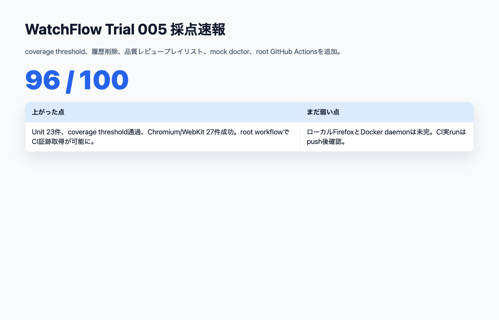
結果
Trial 004は 91 / 100 だった。
90点台には入ったが、まだ100点ではない。残っていた壁は、coverage threshold未導入、CI実行証跡なし、データ操作が浅い、Docker Compose経路の検証性が弱い、というものだった。
Trial 005では、これらをさらにAI Task Packetへ戻した。
結果は 96 / 100。
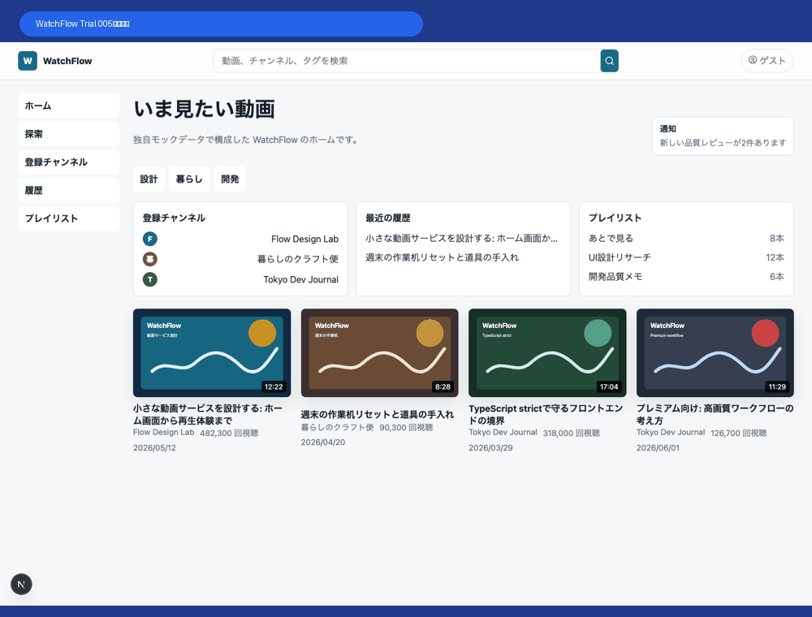
主な改善
- coverage thresholdを導入
- coverageが全指標で改善
- 視聴履歴の表示/削除を追加
- 後で見るリストの追加/解除を維持
- 品質レビュープレイリストの追加/削除を追加
- Unit Test 21件 → 23件
- E2E 23件 → 27件
mock:doctor追加- repo rootにTrial 005専用GitHub Actions workflowを追加
- READMEにCI badgeと記事リンクを追加
画面
ホーム
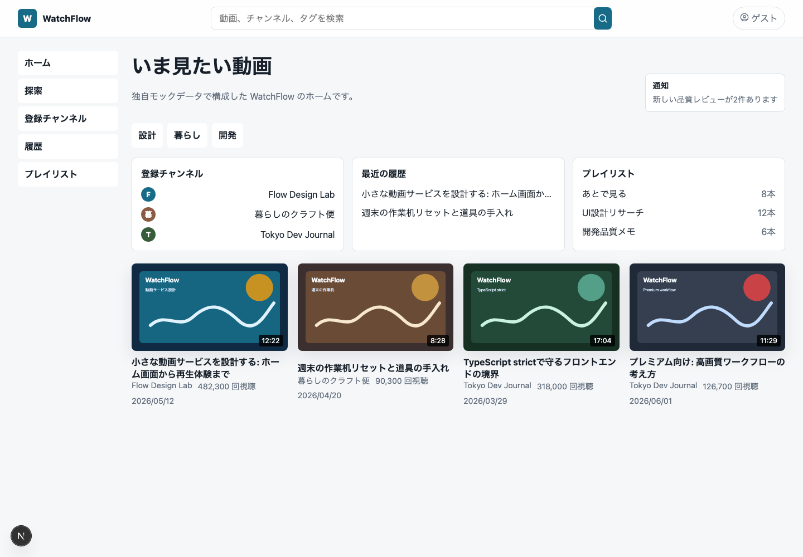
見た目の大変更はしていない。Trial 005の主眼は、操作と検証の密度を上げることだった。
動画詳細
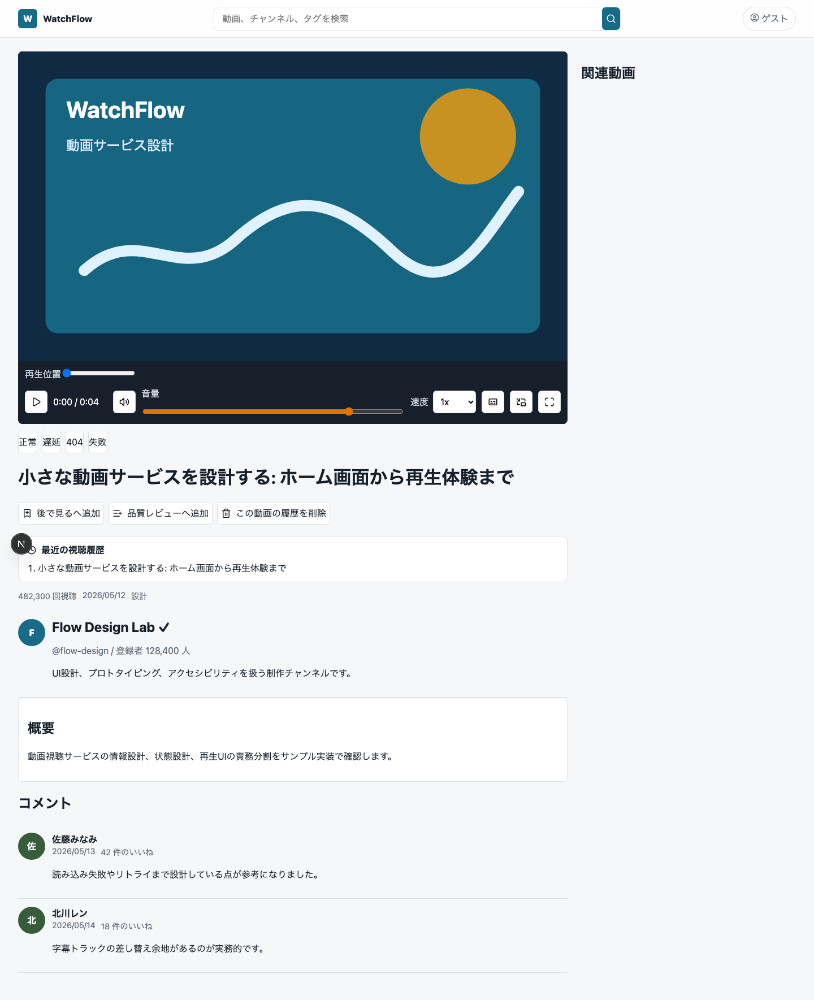
後で見る + 品質レビュープレイリスト
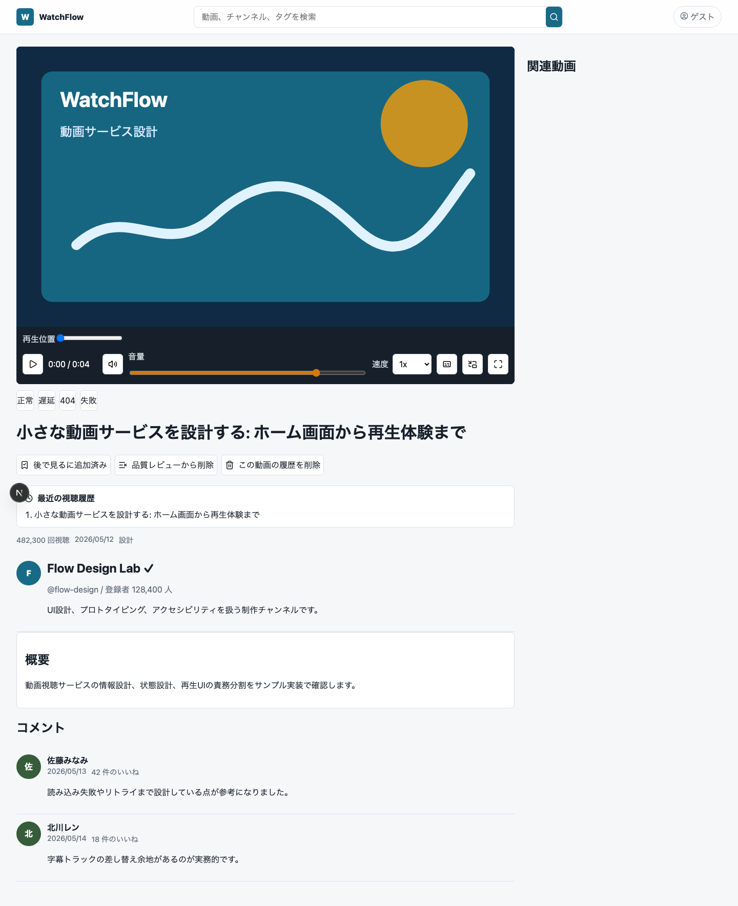
Trial 005では、動画詳細画面にライブラリ操作を追加した。
後で見るへ追加
品質レビューへ追加
この動画の履歴を削除これにより、ただ表示されているだけのUIから、ユーザー操作を伴うProduct Parityへ少し近づいた。
視聴履歴の削除
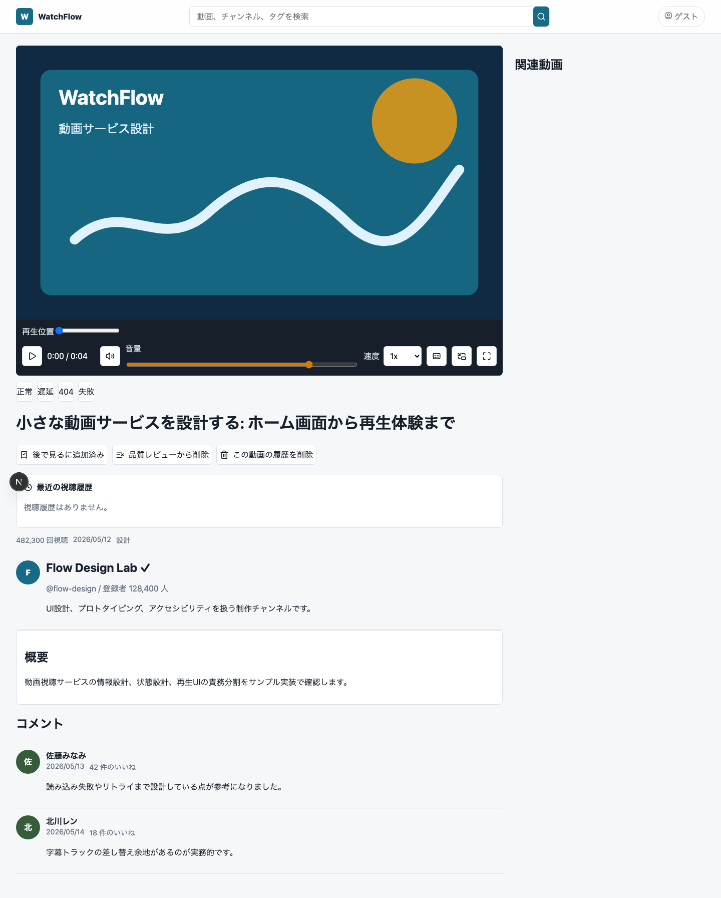
視聴履歴はlocalStorageベースの簡易実装だが、追加/削除の境界を明示した。docsには、将来的にmock APIへ移す永続化境界も書いた。
mock service doctor
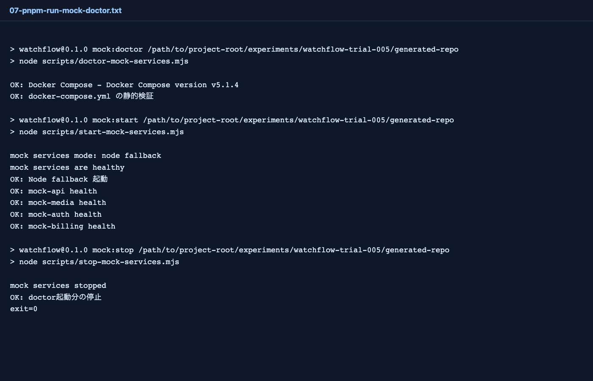
mock:doctor を追加した。
今回のローカル環境ではDocker daemonが起動していないため、Docker Composeの実起動はできない。ただし、compose設定の静的検証とNode fallback health確認は通った。
OK: Docker Compose
OK: docker-compose.yml の静的検証
OK: Node fallback 起動
OK: mock-api health
OK: mock-media health
OK: mock-auth health
OK: mock-billing health実行した検証
pnpm install --frozen-lockfile exit=0
pnpm run lint exit=0
pnpm run typecheck exit=0
pnpm run test exit=0
pnpm run test:coverage exit=0
pnpm run build exit=0
pnpm run mock:doctor exit=0Unit Testは23件合格。
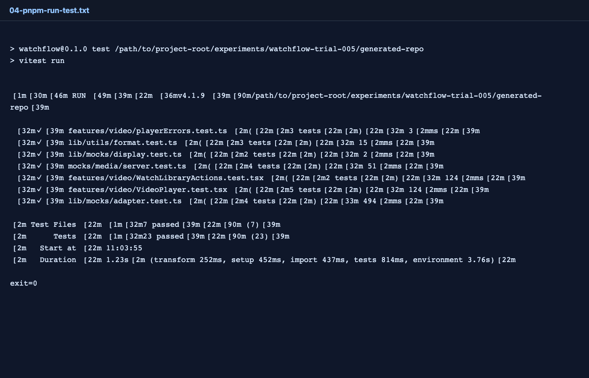
coverage threshold導入後も合格した。
Statements: 71.34%
Branches: 67.56%
Functions: 60.82%
Lines: 75.08%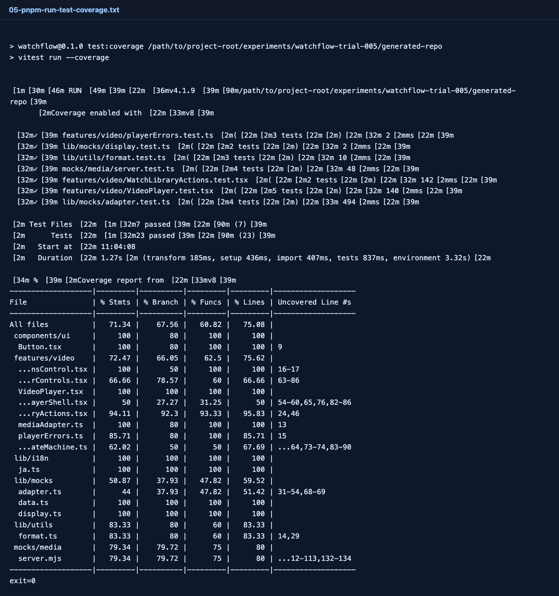
Trial 004からのcoverage差分：
| 指標 | Trial 004 | Trial 005 |
|---|---|---|
| Statements | 67.35% | 71.34% |
| Branches | 64.28% | 67.56% |
| Functions | 54.87% | 60.82% |
| Lines | 71.08% | 75.08% |
E2E
pnpm exec playwright test --project=chromium --project=webkit
27 passed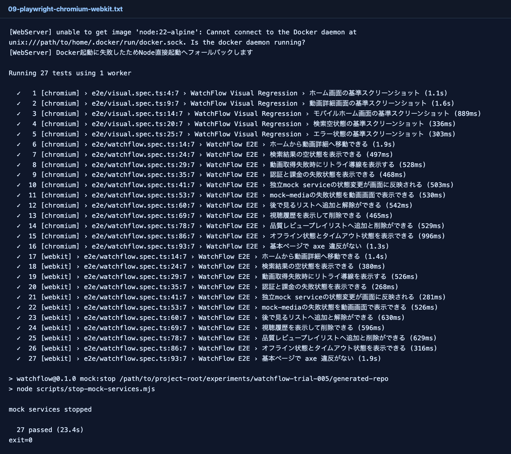
増えた確認は主にこれだ。
後で見るリストへ追加と解除ができる
視聴履歴を表示して削除できる
品質レビュープレイリストへ追加と削除ができるFirefoxはローカルにはまだない。
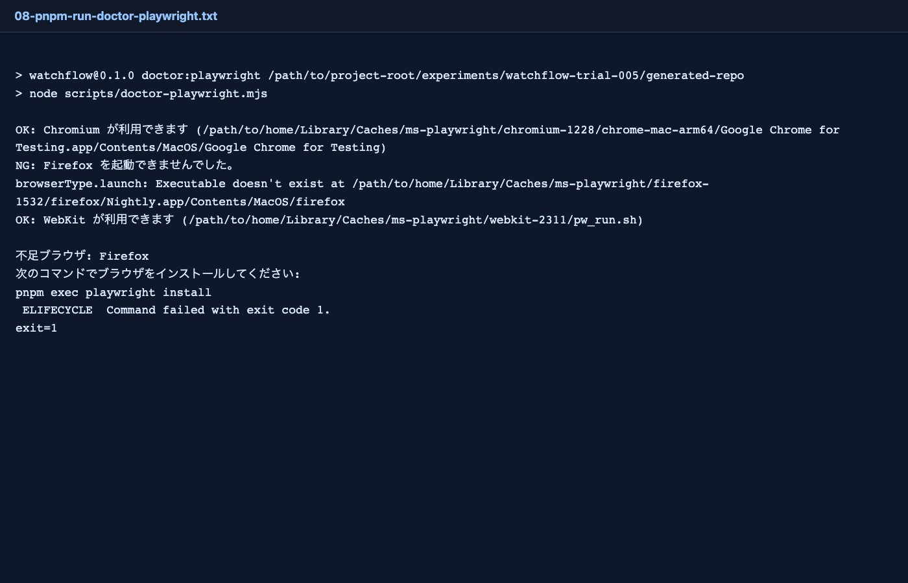
このため、Firefox込みの最終証跡はGitHub Actionsで取る方針にした。
root GitHub Actionsを追加
Trial 004までは、generated repo内にはCI workflowがあった。しかしGitHub Actionsが読むのはrepo rootの .github/workflows だけなので、そのままだと実際のGitHub上では走らない。
Trial 005ではrepo rootに以下を追加した。
.github/workflows/watchflow-trial005-ci.ymlこのworkflowは、次を実行する。
pnpm install --frozen-lockfile
pnpm exec playwright install --with-deps
pnpm run doctor:playwright
pnpm run mock:doctor
pnpm run lint
pnpm run typecheck
pnpm run test:coverage
pnpm run build
pnpm run test:e2eartifactも保存する。
playwright-report
test-results
coverage採点
| カテゴリ | 配点 | Trial 004 | Trial 005 | 理由 |
|---|---|---|---|---|
| Product Parity | 10 | 9 | 10 | 後で見る、履歴削除、品質レビュー操作が入った |
| Video Experience | 12 | 10 | 10 | Trial 004水準維持。Firefoxローカル未完 |
| Network / State Handling | 10 | 9 | 9 | mock state操作維持。通知既読/premium制御は浅い |
| Mock Backend Contracts | 8 | 8 | 8 | mock:doctor追加。Docker実起動は未確認 |
| Technical Foundation | 10 | 9 | 10 | coverage threshold、mock doctor、root workflow追加 |
| Next.js Architecture | 10 | 9 | 9 | external mock boundary維持。永続化はlocalStorage中心 |
| Component Architecture | 8 | 7 | 8 | WatchLibraryActionsを分離しUnit化 |
| Design System | 8 | 7 | 7 | 既存水準維持 |
| Accessibility | 8 | 8 | 8 | axe合格維持 |
| E2E / Visual / Unit | 13 | 12 | 13 | Unit 23件、E2E 27件、coverage threshold合格 |
| Public Repo Operations | 6 | 5 | 4 | root workflow追加。ただし実CI run確認前なので控えめ |
| 合計 | 100 | 91 | 96 | +5点 |
100点までの残り
96点まで来た。残り4点は、実行環境の証跡に近い。
- GitHub ActionsでFirefox込みCIを実際に成功させる
- CI artifactを確認する
- Docker daemonあり環境でdocker compose pathを実起動確認する
- premium権限制御や通知既読をE2E化する
まとめ
Trial 005は、派手な画面追加ではなく、100点に必要な検証の入口を増やす回だった。
coverage thresholdを導入し、E2Eを増やし、repo rootにGitHub Actionsを置き、CI artifactの導線を作った。
ここまで来ると、AI駆動開発の評価は「アプリが動くか」ではなく、第三者が同じ手順で品質を再確認できるかに移ってくる。